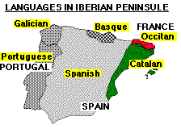

Introduction:
Catalunya (Catalonia in
catalan language) is a region on the north east of Spain. Catalunya has its own culture, traditions and
language: the catalan. Catalan is spoken not only in Catalunya but also in València, Illes Balears and in a small area in the south of France
and Italy. Take a look to the small map: can you see the green area?
In that area, people speaks catalan, but not only catalan, they also
speak Spanish!!.
 But
don't be mistaken!!! Catalunya is not the
whole green area. Catalunya is smaller. Look
at the following map and you will discover Catalunya. But if you really want to know more about
this small nation, take a look to the other pages in the Catalunya Web.
But
don't be mistaken!!! Catalunya is not the
whole green area. Catalunya is smaller. Look
at the following map and you will discover Catalunya. But if you really want to know more about
this small nation, take a look to the other pages in the Catalunya Web.